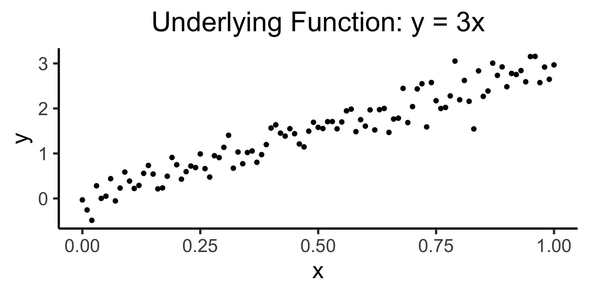
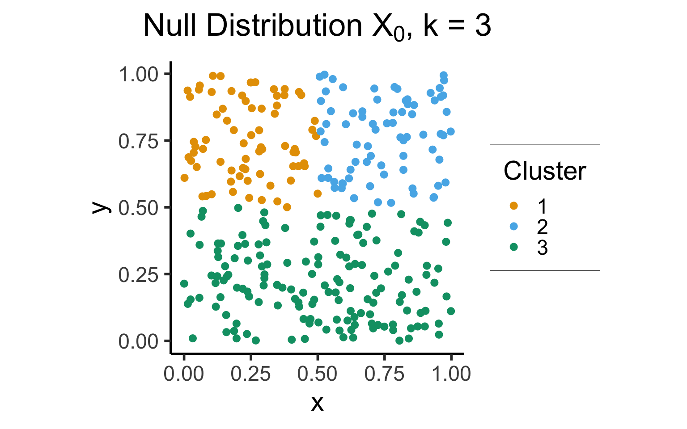
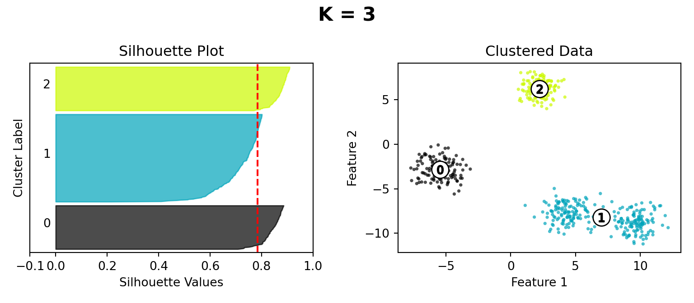
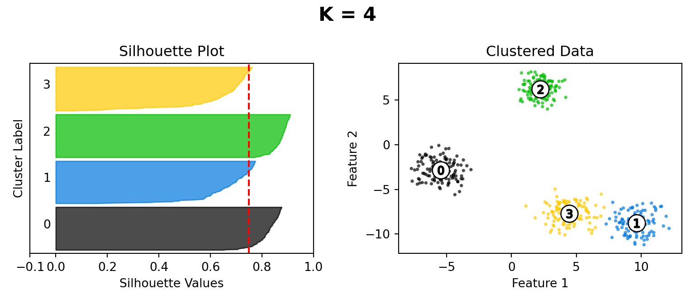
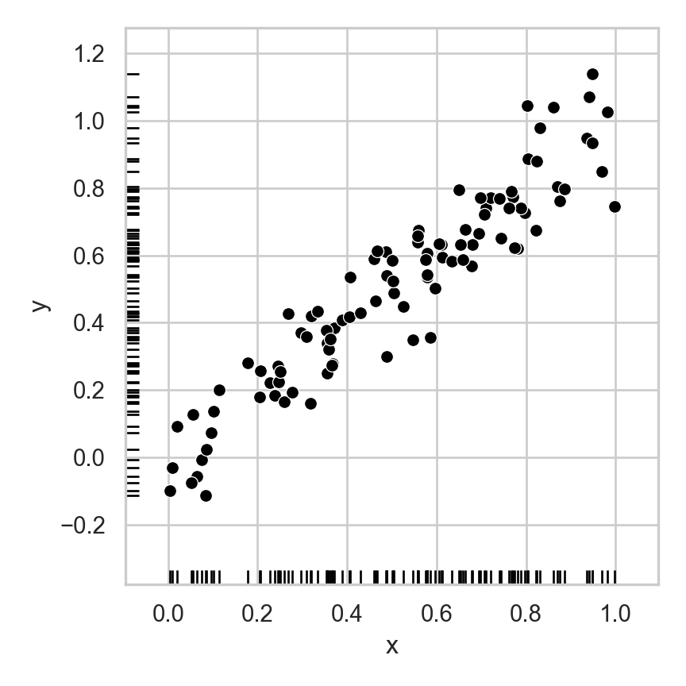
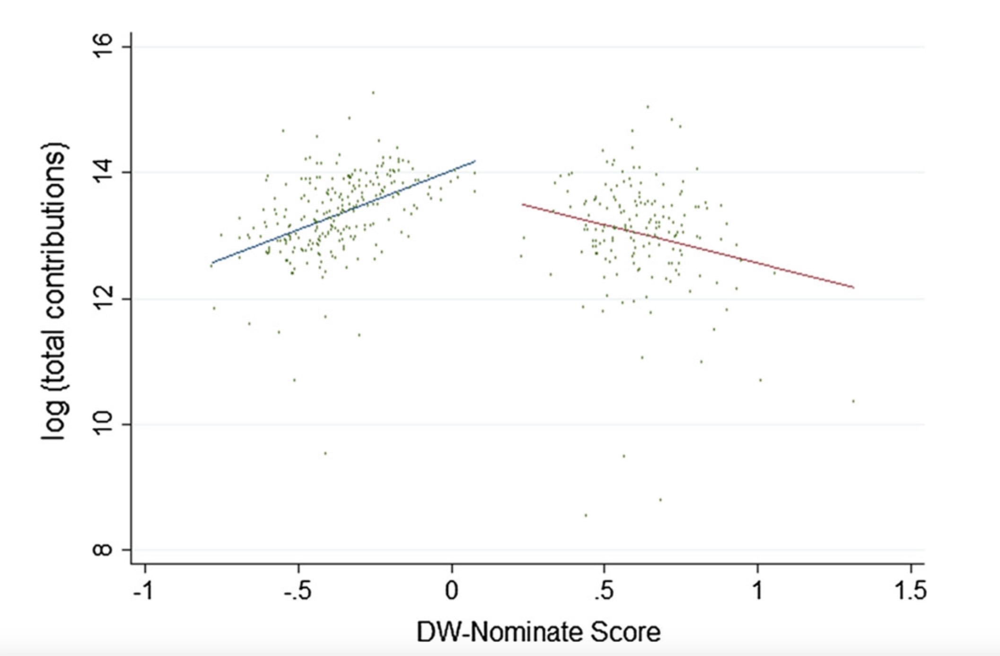
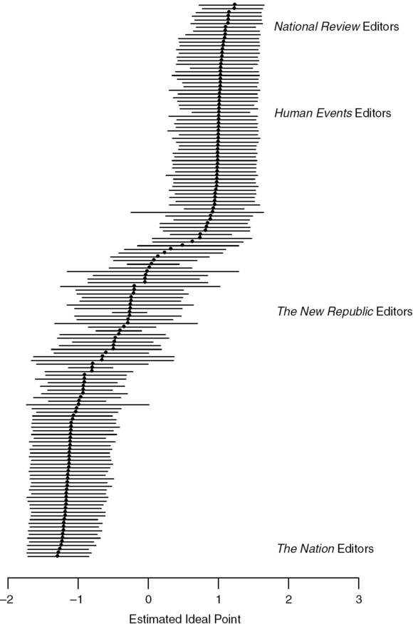
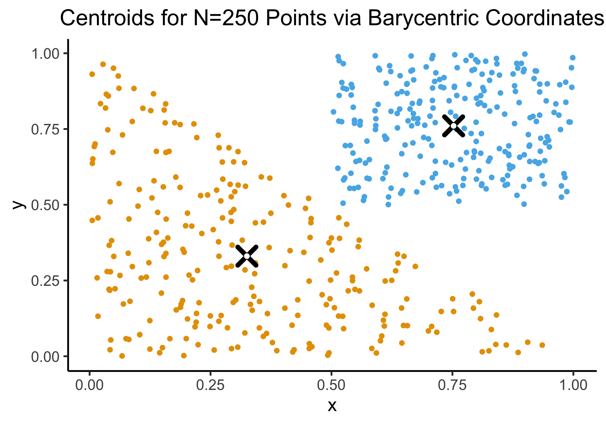

Week 10: Dimensionality Reduction
DSAN 5000: Data Science and Analytics
Section 02
Tuesday, October 31, 2023
Correlation Coefficients
- Pearson: measures degree to which points increase linearly.
- High if increasing \(x\) by 1 unit leads to increases in \(y\) by \(m\) units for some constant \(m\) (\(y = mx + b\))
- Spearman: measures degree to which points increase monotonically
- High if increases in \(x\) “lead to” increases in \(y\)
Code
library(tidyverse)
library(patchwork)
N <- 100
sigma_lin <- 0.25
x_vals <- seq(from = 0, to = 1, by = 1/N)
y_lin_latent <- 3 * x_vals
epsilon_lin <- rnorm(N, 0, sigma_lin)
y_lin_vals <- y_lin_latent + epsilon_lin
linear_df <- tibble(x=x_vals, y=y_lin_vals)
lin_plot <- ggplot(linear_df, aes(x=x, y=y)) +
geom_point(size = g_pointsize / 2) +
dsan_theme('quarter') +
labs(
title = "Underlying Function: y = 3x"
)
lin_plot
print_corrs <- function(x, y) {
pearson <- cor(x, y, method="pearson")
pearson_str <- sprintf("%.3f", pearson)
spearman <- cor(x, y, method="spearman")
spearman_str <- sprintf("%.3f", spearman)
writeLines(paste0("Pearson: ",pearson_str,", Spearman: ",spearman_str))
}
print_corrs(x_vals, y_lin_vals)
sigma_exp <- 5
y_exp_latent <- exp(5 * x_vals)
epsilon_exp <- rnorm(N, 0, sigma_exp)
y_exp_vals <- y_exp_latent + epsilon_exp
exp_df <- tibble(x = x_vals, y = y_exp_vals)
exp_plot <- ggplot(exp_df, aes(x=x, y=y)) +
geom_point(size = g_pointsize / 2) +
dsan_theme('quarter') +
labs(
title = "Underlying Function: y = exp(5x)"
)
exp_plot
print_corrs(x_vals, y_exp_vals)
Pearson: 0.957, Spearman: 0.959
Pearson: 0.868, Spearman: 0.944K-Means Clustering: Centroids
- In general, the centroid \(\mu(S)\) of a set of \(N\) points \(S = \{\mathbf{x}_1, \mathbf{x}_2, \ldots, \mathbf{x}_n\}\) is just the arithmetic mean of all points in \(S\):
\[ \mu(S) = \frac{1}{|S|}\sum_{\mathbf{x}_i \in S}\mathbf{x}_i \]
\[ \begin{align*} \mathbf{x}_1 &= (\phantom{0}0\phantom{0}, 0) \\ \mathbf{x}_2 &= (\phantom{0}1\phantom{0}, 0) \\ \mathbf{x}_3 &= (0.5~, 1) \end{align*} \]
\[ \implies \]
\[ \mu(\mathbf{X}) = \left( \frac{1}{2}, \frac{1}{3} \right) \\ \]
Code
simple_df <- tribble(
~x, ~y,
0, 0,
1, 0,
0.5, 1
)
cent_x_simple <- mean(simple_df$x)
cent_y_simple <- mean(simple_df$y)
cent_df_simple <- tibble(x=cent_x_simple, y=cent_y_simple)
ggplot(simple_df, aes(x=x, y=y)) +
geom_point(size = g_pointsize) +
geom_point(
data=cent_df_simple,
aes(x=x, y=y),
shape=4, stroke=4, color='black',
size = g_pointsize * 1.5
) +
geom_point(
data=cent_df_simple,
aes(x=x, y=y),
shape=19, color='white',
size = g_pointsize / 2) +
dsan_theme('quarter') +
labs(
title = "Centroid of Three Points"
) +
theme(
axis.title.x = element_blank()
)
Code
N <- 250
r1_vals <- runif(N, 0, 1)
r2_vals <- runif(N, 0, 1)
triangle_df <- tibble(r1=r1_vals, r2=r2_vals)
v1 <- c(0,0)
v2 <- c(1,0)
v3 <- c(0,1)
triangle_df <- triangle_df |> mutate(
bary_w1 = 1 - sqrt(r1),
bary_w2 = sqrt(r1) * (1 - r2),
bary_w3 = sqrt(r1) * r2
)
triangle_df <- triangle_df |> mutate(
x = bary_w1 * v1[1] + bary_w2 * v2[1] + bary_w3 * v3[1],
y = bary_w1 * v1[2] + bary_w2 * v2[2] + bary_w3 * v3[2]
)
triangle_cent_x <- mean(triangle_df$x)
triangle_cent_y <- mean(triangle_df$y)
triangle_cent_df <- tibble(x=triangle_cent_x, y=triangle_cent_y)
triangle_plot <- ggplot(
triangle_df,
aes(x=x, y=y)
) +
geom_point(
size = g_pointsize / 2,
color=cbPalette[1]
) +
geom_point(
data=triangle_cent_df,
aes(x=x, y=y),
shape=4, stroke=4, color='black',
size = g_pointsize * 1.5) +
geom_point(
data=triangle_cent_df,
aes(x=x, y=y),
shape=19, color='white',
size = g_pointsize / 2) +
dsan_theme('quarter')
# Now a rectangle
x_coords_rect <- runif(N, 0.5, 1)
y_coords_rect <- runif(N, 0.5, 1)
rect_df <- tibble(x=x_coords_rect, y=y_coords_rect)
cent_x_rect <- mean(x_coords_rect)
cent_y_rect <- mean(y_coords_rect)
cent_df_rect <- tibble(x=cent_x_rect, y=cent_y_rect)
rect_plot <- triangle_plot +
geom_point(
data=rect_df,
aes(x=x, y=y),
size = g_pointsize / 2,
color=cbPalette[2]
) +
geom_point(
data=cent_df_rect,
aes(x=x, y=y),
shape=4, stroke=4, color='black',
size = g_pointsize * 1.5) +
geom_point(
data=cent_df_rect,
aes(x=x, y=y),
shape=19, color='white',
size = g_pointsize / 2) +
dsan_theme('half') +
theme(
axis.title.x = element_blank()
)
rect_plot 
Gap Statistic
- From Tibshirani, Walther, and Hastie (2001)
- Intuition: choice \(k\) is “good” for data \(\mathbf{X}\) if it produces clusters that are more cohesive than null distribution \(\mathbf{X}_0\) with points uniformly distributed in the same range as \(\mathbf{X}\):
\[ \text{Gap}_N(k) = \mathbb{E}_{\mathbf{X}_0}[\log(W_k)] - \log(W_k) \]
Code
library(tidyverse)
library(patchwork)
library(MASS)
library(latex2exp)
N <- 300
x_coords_unif <- runif(N, 0, 1)
y_coords_unif <- runif(N, 0, 1)
unif_df <- tibble(x = x_coords_unif, y = y_coords_unif)
unif_df <- unif_df |> mutate(
cluster = ifelse(y <= 0.5, 3, ifelse(x <= 0.5, 1, 2))
)
plot_title <- TeX(r"(Null Distribution $X_0$, k = 3)")
unif_gap_plot <- ggplot(unif_df, aes(x=x, y=y, color=factor(cluster))) +
geom_point(size = g_pointsize / 2) +
dsan_theme('half') +
labs(
title = plot_title,
color = "Cluster"
) +
coord_equal()
unif_gap_plot
N_cluster <- 100
sigma <- 0.01
Sigma <- matrix(c(sigma, 0, 0, sigma), nrow=2)
Mu1 <- c(0.2, 0.8)
Mu2 <- c(0.8, 0.8)
Mu3 <- c(0.5, 0.2)
cluster1 <- as_tibble(mvrnorm(N_cluster, Mu1, Sigma))
cluster1 <- cluster1 |> mutate(cluster = 1)
#print(cluster1)
cluster2 <- as_tibble(mvrnorm(N_cluster, Mu2, Sigma))
cluster2 <- cluster2 |> mutate(cluster = 2)
cluster3 <- as_tibble(mvrnorm(N_cluster, Mu3, Sigma))
cluster3 <- cluster3 |> mutate(cluster = 3)
cluster_df <- bind_rows(cluster1, cluster2, cluster3)
colnames(cluster_df) <- c("x","y","cluster")
cluster_gap_plot <- ggplot(cluster_df, aes(x=x, y=y, color=factor(cluster))) +
geom_point(size = g_pointsize / 2) +
dsan_theme('half') +
labs(
title = "Actual Data X, k = 3",
color = "Cluster"
) +
coord_equal()
cluster_gap_plot

Silhouette Method
Code
import matplotlib.cm as cm
import matplotlib.pyplot as plt
import numpy as np
from sklearn.cluster import KMeans
from sklearn.datasets import make_blobs
from sklearn.metrics import silhouette_samples, silhouette_score
# Generating the sample data from make_blobs
# This particular setting has one distinct cluster and 3 clusters placed close
# together.
X, y = make_blobs(
n_samples=500,
n_features=2,
centers=4,
cluster_std=1,
center_box=(-10.0, 10.0),
shuffle=True,
random_state=5000
)
def silhouette_plot(n_clusters):
# Create a subplot with 1 row and 2 columns
fig, (ax1, ax2) = plt.subplots(1, 2)
fig.set_size_inches(8, 3.5)
# The 1st subplot is the silhouette plot
# The silhouette coefficient can range from -1, 1 but in this example all
# lie within [-0.1, 1]
ax1.set_xlim([-0.1, 1])
# The (n_clusters+1)*10 is for inserting blank space between silhouette
# plots of individual clusters, to demarcate them clearly.
ax1.set_ylim([0, len(X) + (n_clusters + 1) * 10])
# Initialize the clusterer with n_clusters value and a random generator
# seed of 10 for reproducibility.
clusterer = KMeans(n_clusters=n_clusters, n_init="auto", random_state=10)
cluster_labels = clusterer.fit_predict(X)
# The silhouette_score gives the average value for all the samples.
# This gives a perspective into the density and separation of the formed
# clusters
silhouette_avg = silhouette_score(X, cluster_labels)
#print(
# "For n_clusters =",
# n_clusters,
# "The average silhouette_score is :",
# silhouette_avg,
#)
# Compute the silhouette scores for each sample
sample_silhouette_values = silhouette_samples(X, cluster_labels)
y_lower = 10
for i in range(n_clusters):
# Aggregate the silhouette scores for samples belonging to
# cluster i, and sort them
ith_cluster_silhouette_values = sample_silhouette_values[cluster_labels == i]
ith_cluster_silhouette_values.sort()
size_cluster_i = ith_cluster_silhouette_values.shape[0]
y_upper = y_lower + size_cluster_i
color = cm.nipy_spectral(float(i) / n_clusters)
ax1.fill_betweenx(
np.arange(y_lower, y_upper),
0,
ith_cluster_silhouette_values,
facecolor=color,
edgecolor=color,
alpha=0.7,
)
# Label the silhouette plots with their cluster numbers at the middle
ax1.text(-0.05, y_lower + 0.5 * size_cluster_i, str(i))
# Compute the new y_lower for next plot
y_lower = y_upper + 10 # 10 for the 0 samples
ax1.set_title("Silhouette Plot")
ax1.set_xlabel("Silhouette Values")
ax1.set_ylabel("Cluster Label")
# The vertical line for average silhouette score of all the values
ax1.axvline(x=silhouette_avg, color="red", linestyle="--")
ax1.set_yticks([]) # Clear the yaxis labels / ticks
ax1.set_xticks([-0.1, 0, 0.2, 0.4, 0.6, 0.8, 1])
# 2nd Plot showing the actual clusters formed
colors = cm.nipy_spectral(cluster_labels.astype(float) / n_clusters)
ax2.scatter(
X[:, 0], X[:, 1], marker=".", s=30, lw=0, alpha=0.7, c=colors, edgecolor="k"
)
# Labeling the clusters
centers = clusterer.cluster_centers_
# Draw white circles at cluster centers
ax2.scatter(
centers[:, 0],
centers[:, 1],
marker="o",
c="white",
alpha=1,
s=200,
edgecolor="k",
)
for i, c in enumerate(centers):
ax2.scatter(c[0], c[1], marker="$%d$" % i, alpha=1, s=50, edgecolor="k")
ax2.set_title("Clustered Data")
ax2.set_xlabel("Feature 1")
ax2.set_ylabel("Feature 2")
# plt.suptitle(
# "Silhouette analysis for KMeans clustering on sample data with n_clusters = %d"
# % n_clusters,
# fontsize=14,
# fontweight="bold",
# )
plt.suptitle("K = " + str(n_clusters), fontsize=16, fontweight="bold")
plt.tight_layout()
plt.show()



Dimensionality Reduction: Noisy Data
- If points are perfectly linear, 1D representation perfectly compresses 2D data
- Now, same intuition but with lossy representation: how many dimensions do we really need to describe where a person is on this line, to high approximation?
Code
import pandas as pd
import numpy as np
import matplotlib.pyplot as plt
import seaborn as sns
rng = np.random.default_rng(seed = 5000)
def set_seaborn_style():
sns.set(rc={'figure.figsize':(4.5,4.5)})
sns.set_theme(style="whitegrid")
set_seaborn_style()
N = 100
slope = 1
intercept = 0
# Now with noise
sigma = 0.1
x_coords = rng.uniform(0,1,N)
# Generate normally distributed random error ~ N(0, sigma**2)
errors = rng.normal(loc=0, scale=sigma, size=N)
y_coords = slope * x_coords + intercept + errors
random_line_df = pd.DataFrame({'x':x_coords, 'y':y_coords})
sns.scatterplot(data=random_line_df, x="x", y="y", color='black')
sns.rugplot(data=random_line_df, x="x", y="y", color='black')
plt.tight_layout()
plt.show()
from sklearn.decomposition import PCA
set_seaborn_style()
pca = PCA(n_components=2).fit(random_line_df.values)
Xp = pca.transform(random_line_df.values)
Xp_df = pd.DataFrame(Xp, columns=['x','y'])
pca_scatter = sns.scatterplot(data=Xp_df, x="x", y="y", color='black')
pca_scatter.set_xlim((-1,1));
pca_scatter.set_ylim((-1,1));
custom_ticks = [-1,-0.8,-0.6,-0.4,-0.2,0,0.2,0.4,0.6,0.8,1]
pca_scatter.set_xticks(custom_ticks)
pca_scatter.set_yticks(custom_ticks)
pca_scatter.set_xlabel("First Principal Component")
pca_scatter.set_ylabel("Second Principal Component")
plt.axhline(0, color='black', alpha=0.5)
plt.axvline(0, color='black', alpha=0.5)
sns.rugplot(data=Xp_df, x="x", y="y", color='black')
plt.tight_layout()
plt.show()

Political Contributions vs. Ideology


For Media Literacy


For NLP

- High-level goal: Retain information about word-context relationships while reducing the \(M\)-dimensional representations of each word down to 3 dimensions.
- Low-level goal: Generate rank-\(K\) matrix \(\mathbf{W}\) which best approximates distances between words in \(M\)-dimensional space (rows in \(\mathbf{X}\))
But What Do The Vectors Mean?
- The coordinates of a word vector \(\textbf{w}\) mean… the coordinates that best preserve its distance to other words in the high-dimensional space
- However, you can transform the word vectors, or the space they’re plotted in, to impose meaning upon the otherwise-meaningless coordinates!

“Gaps” Between Vectors Also Meaningful!

Appendix: Uniform Sampling From A Triangle
- See here for how the K-Means Clustering: Centroids slide sampled uniformly from \(\triangle\)!
- If you don’t use the Barycentric coordinate transformation (right), your points will be clustered more heavily towards the bottom-right of the triangle (left), and the centroid of the sampled points will not be the actual centroid of the triangle!
Code
N <- 250
x_coords <- runif(N, 0, 1)
y_coords <- runif(N, 0, 1 - x_coords)
data_df <- tibble(x=x_coords, y=y_coords)
cent_x <- mean(x_coords)
cent_y <- mean(y_coords)
cent_df <- tibble(x=cent_x, y=cent_y)
triangle_plot <- ggplot(
data_df,
aes(x=x, y=y)
) +
geom_point(
size = g_pointsize / 2,
color=cbPalette[1]
) +
geom_point(
data=cent_df,
aes(x=x, y=y),
shape=4, stroke=4, color='black',
size = g_pointsize * 1.5) +
geom_point(
data=cent_df,
aes(x=x, y=y),
shape=19, color='white',
size = g_pointsize / 2) +
dsan_theme('quarter')
# Now a rectangle
x_coords_rect <- runif(N, 0.5, 1)
y_coords_rect <- runif(N, 0.5, 1)
rect_df <- tibble(x=x_coords_rect, y=y_coords_rect)
cent_x_rect <- mean(x_coords_rect)
cent_y_rect <- mean(y_coords_rect)
cent_df_rect <- tibble(x=cent_x_rect, y=cent_y_rect)
rect_plot <- triangle_plot +
geom_point(
data=rect_df,
aes(x=x, y=y),
size = g_pointsize / 2,
color=cbPalette[2]
) +
geom_point(
data=cent_df_rect,
aes(x=x, y=y),
shape=4, stroke=4, color='black',
size = g_pointsize * 1.5) +
geom_point(
data=cent_df_rect,
aes(x=x, y=y),
shape=19, color='white',
size = g_pointsize / 2) +
dsan_theme('half') +
labs(
title = "Centroids for N=250 Points: Y ~ U[0,X]"
)
rect_plot
N <- 250
r1_vals <- runif(N, 0, 1)
r2_vals <- runif(N, 0, 1)
triangle_df <- tibble(r1=r1_vals, r2=r2_vals)
v1 <- c(0,0)
v2 <- c(1,0)
v3 <- c(0,1)
triangle_df <- triangle_df |> mutate(
bary_w1 = 1 - sqrt(r1),
bary_w2 = sqrt(r1) * (1 - r2),
bary_w3 = sqrt(r1) * r2
)
triangle_df <- triangle_df |> mutate(
x = bary_w1 * v1[1] + bary_w2 * v2[1] + bary_w3 * v3[1],
y = bary_w1 * v1[2] + bary_w2 * v2[2] + bary_w3 * v3[2]
)
triangle_cent_x <- mean(triangle_df$x)
triangle_cent_y <- mean(triangle_df$y)
triangle_cent_df <- tibble(x=triangle_cent_x, y=triangle_cent_y)
triangle_plot <- ggplot(
triangle_df,
aes(x=x, y=y)
) +
geom_point(
size = g_pointsize / 2,
color=cbPalette[1]
) +
geom_point(
data=triangle_cent_df,
aes(x=x, y=y),
shape=4, stroke=4, color='black',
size = g_pointsize * 1.5) +
geom_point(
data=triangle_cent_df,
aes(x=x, y=y),
shape=19, color='white',
size = g_pointsize / 2) +
dsan_theme('quarter')
# Now a rectangle
x_coords_rect <- runif(N, 0.5, 1)
y_coords_rect <- runif(N, 0.5, 1)
rect_df <- tibble(x=x_coords_rect, y=y_coords_rect)
cent_x_rect <- mean(x_coords_rect)
cent_y_rect <- mean(y_coords_rect)
cent_df_rect <- tibble(x=cent_x_rect, y=cent_y_rect)
rect_plot <- triangle_plot +
geom_point(
data=rect_df,
aes(x=x, y=y),
size = g_pointsize / 2,
color=cbPalette[2]
) +
geom_point(
data=cent_df_rect,
aes(x=x, y=y),
shape=4, stroke=4, color='black',
size = g_pointsize * 1.5) +
geom_point(
data=cent_df_rect,
aes(x=x, y=y),
shape=19, color='white',
size = g_pointsize / 2) +
dsan_theme('half') +
labs(
title = "Centroids for N=250 Points via Barycentric Coordinates"
)
rect_plot 
